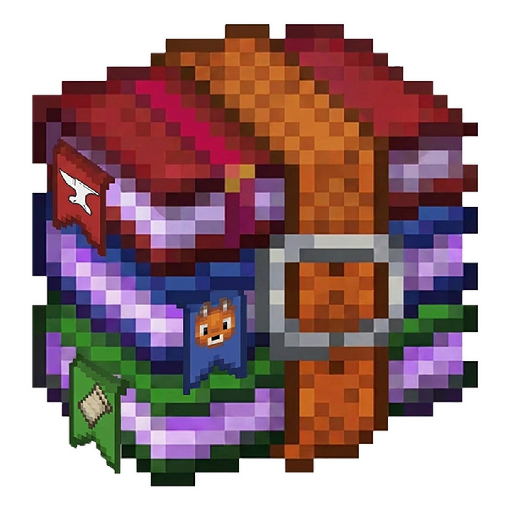

少装一堆东西
Java、Gradle、加载器工程结构已经整理好，减少从零配置时的反复试错。
第一次做 Minecraft 模组，最容易劝退人的不是 Java，而是环境构建。版本、依赖、网络和 Gradle 卡在一起时，新手很难判断问题在哪。懒人包把这一步压缩成可执行流程。
Java、Gradle、加载器工程结构已经整理好，减少从零配置时的反复试错。
把容易卡住的依赖和启动流程提前处理，先确认工程可以进入客户端。
你可以直接跟着后续代码、材质、模型教程推进，不必先被环境问题消耗掉。
当前站内提供 Forge / Fabric / NeoForge 三个 1.21.10 版本，适合先把环境跑通，再进入后续教程。
它不是替你做模组，而是把最磨人的起步环节清掉。工程跑起来以后，你仍然要命名、写功能、放材质、打包，并在启动器里验证结果。

把对应加载器的懒人包放到一个干净目录，先不要混进旧项目文件。

按包内流程执行，等待 Gradle 和工程依赖完成初始化。

确认 runClient 能进入游戏，先验证环境，再开始改功能。

修改模组名称、描述和 Logo，再输出属于自己的模组文件。